더인 교육 5일차
HRR(High Resolution Resist): 흡광계수 (Absorption Coefficient) · PR의 종류와 구성 · [eV] 단위의 의미부터 짚고 가자 · NUV PR의 현상 메커니즘 (Coating → Exposure) · 교재 2slide · Amorphous Si - Poly Si - Single crystal · NA(Numerical Aperture)와 해상도 · 회로 선폭의 의미하는 것은? · Memory 반도체와 비Memory 반도체 · 슬라이드별 메모 (5 · 8 · 9 · 10 Slide) · Soft Bake & Hard Bake · PEB · HMDS 처리 · Carrier Mobility · 슬라이드별 메모 (11 · 12 · 13 Slide) · 15Slide · 16 Slide · Presentation (13:20-15:50) · 대본 (Flash 메모리의 Erase, program에 대해서 설명드리겠습니다.) · 발표 피드백
1. HRR(High Resolution Resist): 흡광계수 (Absorption Coefficient)
- 어떤 PR을 쓸거야! 라고 했을 때 이 PR은 빛을 얼마나 흡수해? 가 흡광계수가 된다는 것이다.
- 빛이 투과를 잘하기 위해서는 빛의 흡광계수가 낮아야한다.
→ High Resolution Resist를 사용한다는 것은 흡광계수가 낮은 물질을 사용한다는 것이다.
Ref) Positivie PR은? 빛을 받은 부분만 용해될 수 있는 부분으로 바뀌는 PR을 말한다
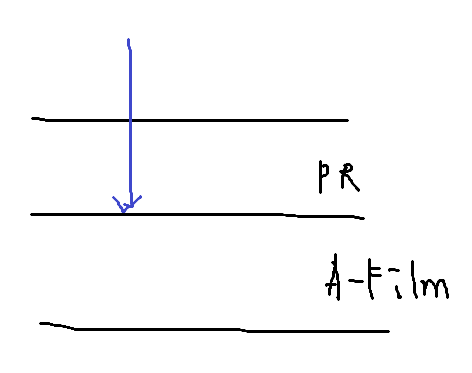
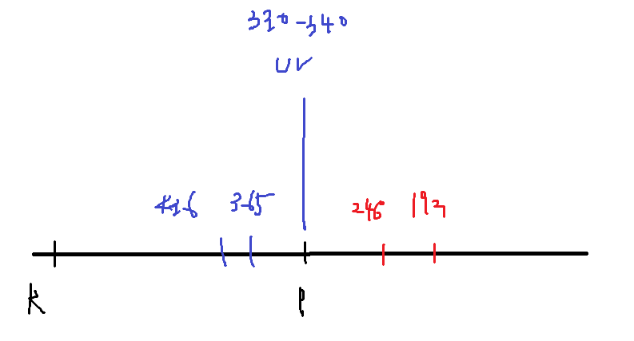
2. PR의 종류와 구성
1. NUV(Near UV) PR - 436nm G-Line, 365nm I-Line
(1) Resin(~10%): Novolac (Polymer)
(2) Sensitizer: PAC(Photo Active Compound) - DNQ(Diazo Naphtho Quinones)
(3) Solvent(~70%): PR의 점도 조절 - Acetate type
(4) Additive
[1] Dye
[2] Surfactant
[3] Adhesion promoter
2. DUV PR(Deep) - 248, 193nm
대상: “DUV PR(Deep) - 248, 193nm”
이것도 NUV 처럼 스토리를 만들고 싶으면 정리해라. 그리고 비교해서 설명할 수 있으면 좋다.
- 여기에서는 Sensitizer를 PAG(Photo Acid Generator) 사용
3. EUV PR - 13.5nm
- 이때도 PAG를 사용하지만 PAG와 직접 충돌하면 EUV는 높은 에너지를 갖고 있기 때문에(앞에서 배웠잖아?) 분해가 되어버린다. 그래서 PAG와 엄밀하게 보면 메커니즘이 다르다.
3. [eV] 단위의 의미부터 짚고 가자
- 전자 1개를 1V를 올리는데 필요한 에너지이다.
- 1eV에 대응하는 온도는 약 11600K이다. (Ref: 철을 녹이는 온도는 1700도이다)
- 이 얘기는 Photon의 에너지를 구하라고 할 때 사용된다.
Photon Energy(eV)
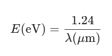
- EUV의 경우 13.5nm 인데, E(eV)를 계산하면 91.8 eV
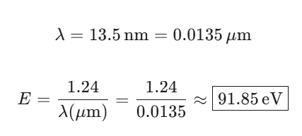
- 빛의 파장이 짧을 수록 광자의 에너지는 커진다. (그리고 온도도 106만 K)
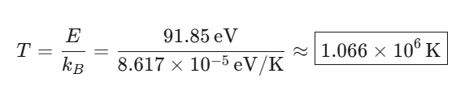
- 이 Photon이 빛이 대기 중의 입자나 particle과 부딪히면 대기 중에 산란되거나 흡수됩니다.
- 그래서 진공이 필요한 것이다. (오마이갓 이런 스토리가)
4. NUV PR의 현상 메커니즘 (Coating → Exposure)
<Coating>
Resin + PAC
→ Dissolution Inhibitor
<Exposure>
Resin + PAC
→ Dissolution 되는 물질로 바뀜
- 그렇기 때문에 빛을 받지 않은 부분에는 Dissolution Inhibitor가 남는다
- 원래라면 현상은 Dissolution 되는 부분이 용해 되는게 맞는데, 빛을 받지 않은 부분의 Resin도 용해가 되긴 한다는 것이지. 그게 100:1 1000:1 정도 되니까 무시하는 것이지.
- PAC는 DNQ이고 있고 빛을 받으면 ICA(Indene Carboxylic Acid, -COOH)로 바뀌면서 용해 됩니다.
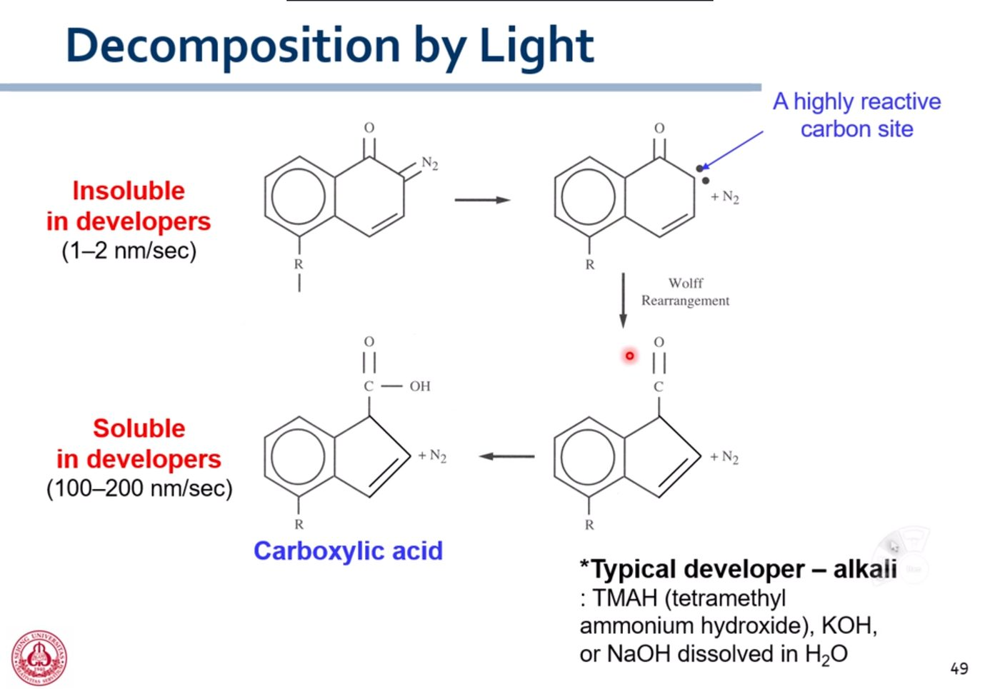
- 기존 DNQ은 중성이라 알칼리(염기성) 용액[현상액]에 잘 녹지 않지만 치환기가 -COOH 카복실산으로 바뀌게 된다면 산성이 되어 잘 녹게 된다.
- 여기에 빛과 H₂O가 들어오면 DNQ가 ICA: Inden Carboxylic Acid[-COOH] 가 됩니다.
- TMAH(Tetramethylammonium hydroxide)가 대표적인 염기성 용액이고, Acid와 만나서 물과 염이 생기게 된다. 산-염기 반응이라는 것이지.
- 그래서 현상액에 담겨서 나오게 되면 흐물흐물한 상태, 경화되지 않은 상태가 된다. 그래서 이 수분을 제거해주는 Bake 과정이 필요한 것이다. (각 공정에서 Bake 단계가 왜 필요한지 확실히 이해했음)
- 그래서 결국 PAC를 사용하던 PAG를 사용하건 Acid가 생겨서 현상액인 TMAH와 만나서 산-염기 반응으로 염과 물이 생기고 Bake를 통해서 H₂O를 날려주는 메커니즘은 같은 것이다.
- 이걸 신소재 공학 관점에서 이 정도 깊이까지 들어와서 이해할 필요가 있다.
<추가공부 KOCW 261107(토)>
1. NUV 추가 공부
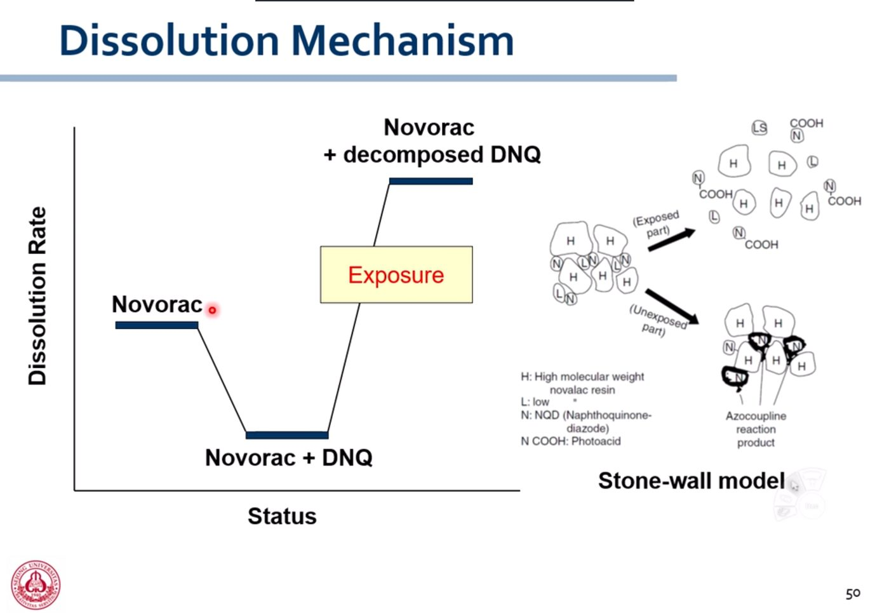
- DNQ는 PAC에 대한 얘기였다. Resin인 Novorac은 어떻게 되는지 살펴보자.
- PR에서 Novorac이 DNQ와 함께 있을 때 DNQ는 잘 안녹다보니 녹는 속도가 느려진다. 하지만 빛에 노출되면 DNQ가 산이 되니까 Novorac 혼자 있을 때 보다 더 빠르게 녹게된다.
2. DUV 추가 공부
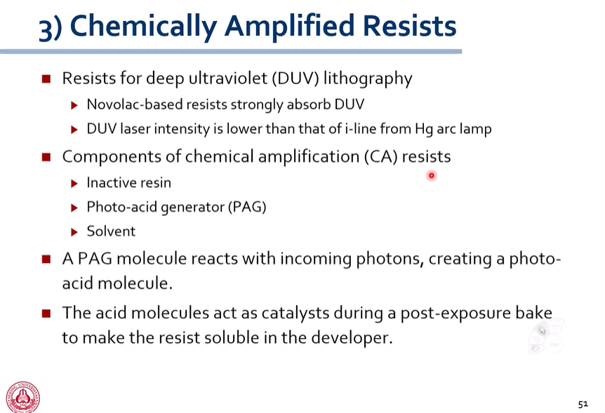
- 이건 빛이 들어가서 화학반응을 조금 시킨다음에 열처리를 시켜서 화학반응을 쭉 퍼트리는 것이다. 따라서 DUV는 Intensity가 NUV에 비해서 낮음에도 불구하고 CAR을 통해서 사용할 수 있게 되었다.
- 구성: Inactive Resin, PAG, Solvent
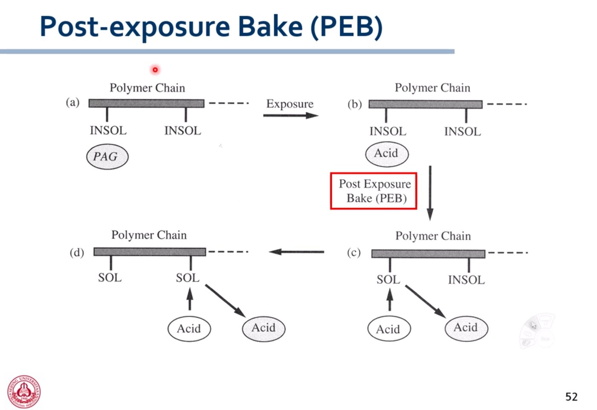
- Inactive Resin 리간드로 현상액에 용해되지 않는 리간드들이 붙어있음. 여기에서 Resin은 NUV 때는 novalac 이었지만 여기서는 아니다.
- PAG에서 H⁺(Acid)가 나오면 리간드를 현상액에 녹게 만들어줌. 근데 이 과정에서 Acid가 또 나온다.
- 그래서 Acid가 1→2→4→8 이런식으로 점점 많아지니까 ‘증폭형’이라고 하는 것이다.
- 빛을 쬔다음에 열처리를 하면 쭉 퍼져서 나가게 되더라 그래서 빛이 강할 필요가 없다.
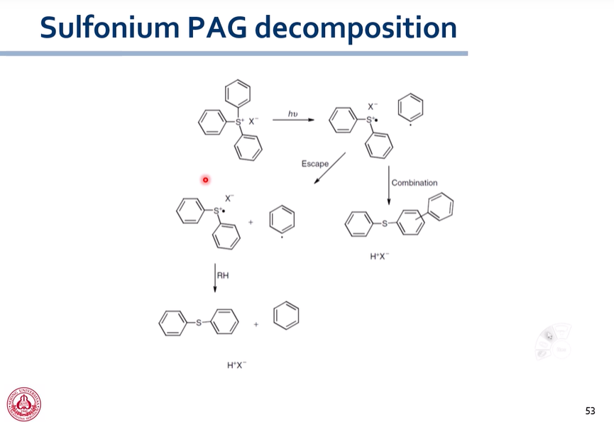
- 이건 PAG이고 회사마다 다르지만 이런식으로 계속해서 산이 나온다.
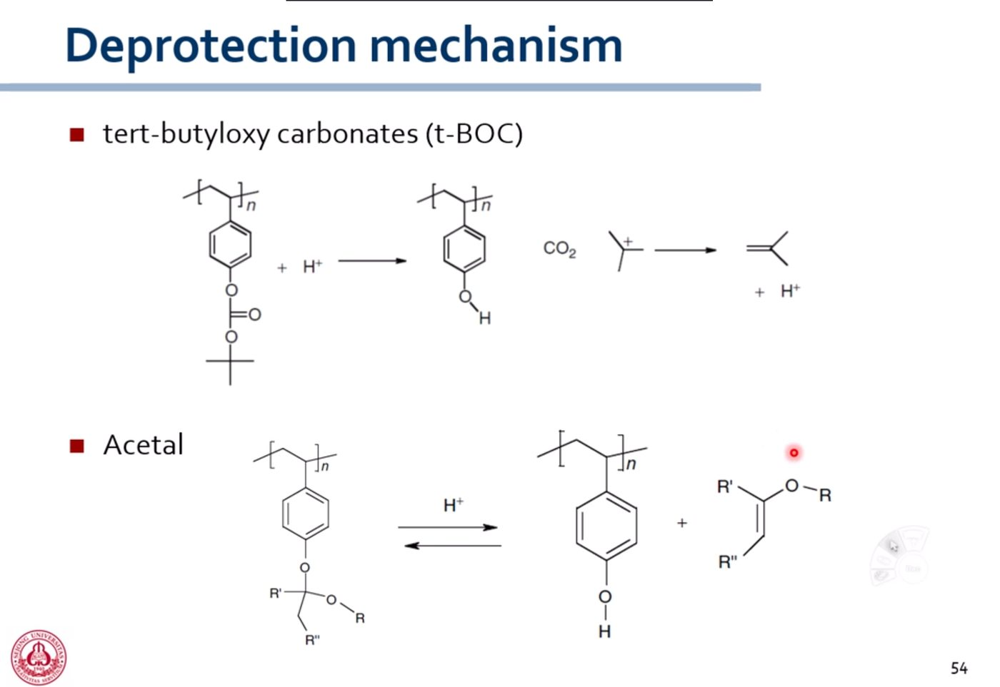
- 이건 Resin 쪽이고 이렇게 산이 나오는 것을 볼 수 있다.
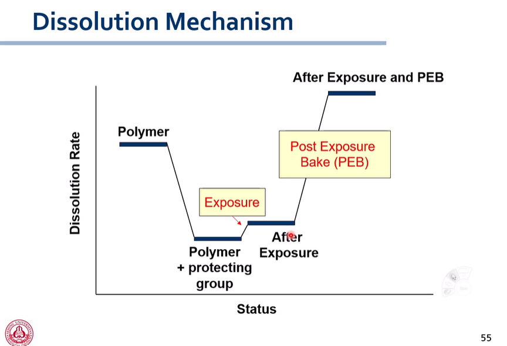
- 기존의 Polymer가 알칼리(현상액)에서 녹는 속도는 아까 Side group을 INSOL로 치환해주게 되면 용해가 잘 안되게 된다.
- Exposure을 하고나면 조금 용융속도가 빨라지지만 PEB를 해주게 되면 H⁺가 증폭되면서 Dissolution 속도가 확 빨라진다.
- 당연한 얘기겠지만 빛을 받은 부분만 저렇게 산이 쫙퍼져 나갈 것이고, 받지 않은 부분은 두번째 Polymer + protecting group으로 존재하고 용융이 느리게 되겠지. 아예 0은 아니겠지만. (아 이제 좀 이해간다)
5. 교재 2slide
Photo Mask 자체는 빛을 차광 시켜주는 역할로 PR pattern과 다르다. PR pattern은 Protection, prevent의 역할이다. 하지만 Photo Mask는 Quartz 부분으로 차광을 시켜준다.
Ref) Si 12인치 Wafer는 775마이크로미터.
- 1Å 정도는 1을 100억개로 쪼갠 스케일
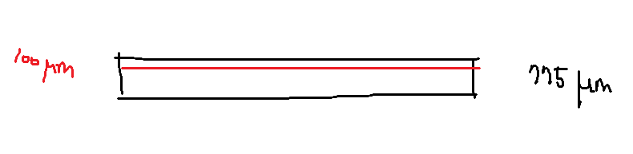
- Wafer의 두께 전체를 사용하지 않고 12인 wafer의 기준으로 100μm 정도만 사용한다. 이건 스펙이 정해져 있다고 함.
Q. 그런데 왜 불필요하게 후공정에서 갈아낼 부분까지 포함해서 두께를 산정하는가?
A. 지금은 당연하게도 Wafer는 모두 기계로 운반한다. 그러기 때문에 잡을 때, hold, suction, vacuum 과정을 진행해도 Wafer가 stress에 의해 파단되는 것을 방지하기 위함이다. 그래서 100마이크로미터가 아니라 775마이크로미터 정도 되는 두께가 필요한 것이다.
6. Amorphous Si - Poly Si - Single crystal
비정질 / 다결정 / 단결정
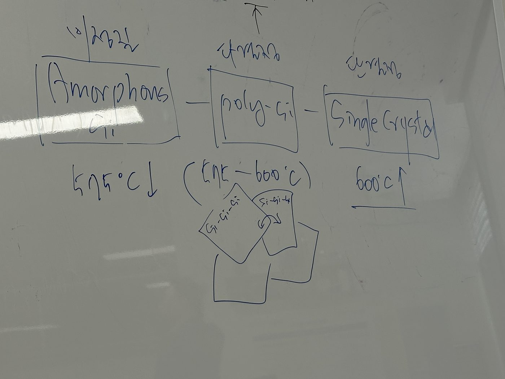
Q. 왜 Single Crystal Si만 Si wafer 기판으로 사용하는가?
A.
(1) 비정질 Si
장거리 규칙성도 없고, dangling bond가 많다.
(2) Poly Si
Grain들 간에 Grain Boundary가 생긴다. 물론 결정립 안에서는 특성이 같을 수 있다. 하지만 결정립마다 특성이 다르고, 결정립계를 넘어갈 때 저항을 느끼게 된다. 또한 Grain Boundary는 빠른 확산 경로가 될 수도 있다.
결론: 우리는 동일한 Input에 동일한 Output이 나오길 바란다. 하지만 비정질 Si과 Poly Si은 적절하지 않다.
Ref) Ion Implant 공정이 끝나고나서 Si 단결정 특성으로 돌리기 위해서 annealing 공정을 진행해야하는 이유이다. 단결정 특성을 회복하기 위해서이다. (Ion Implantation 을 진행하며 결정 구조가 변형되거든)
대상: “Q. 왜 Single Crystal Si만 Si wafer 기판으로 사용하는가?”
내 말로 다시 정리하기
<Sungho Kim>
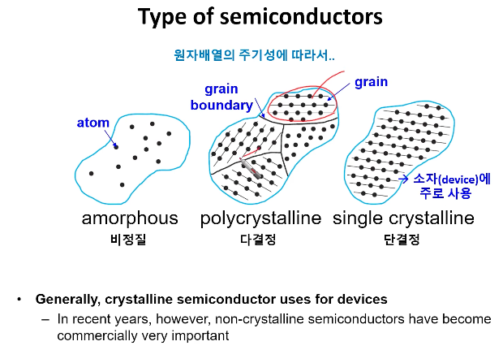
- 소자에서는 단결정을 사용한다.
- 대면적으로 만들어야 하는 경우에는 비정질이나 다결정을 사용할 수도 있다. 예를 들면 태양전지나 TV에 들어가는 반도체는 단결정의 실리콘을 넓은 면적에 만들기가 어렵다.
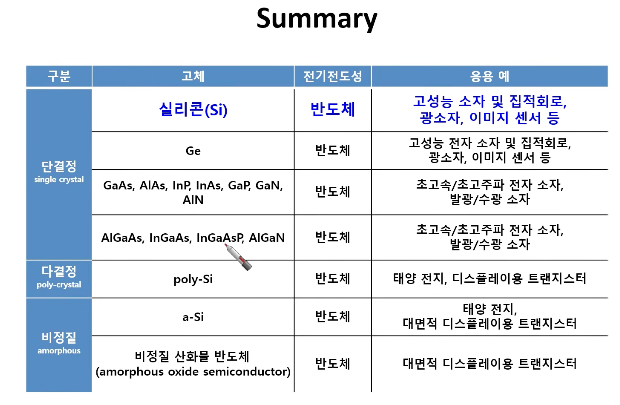
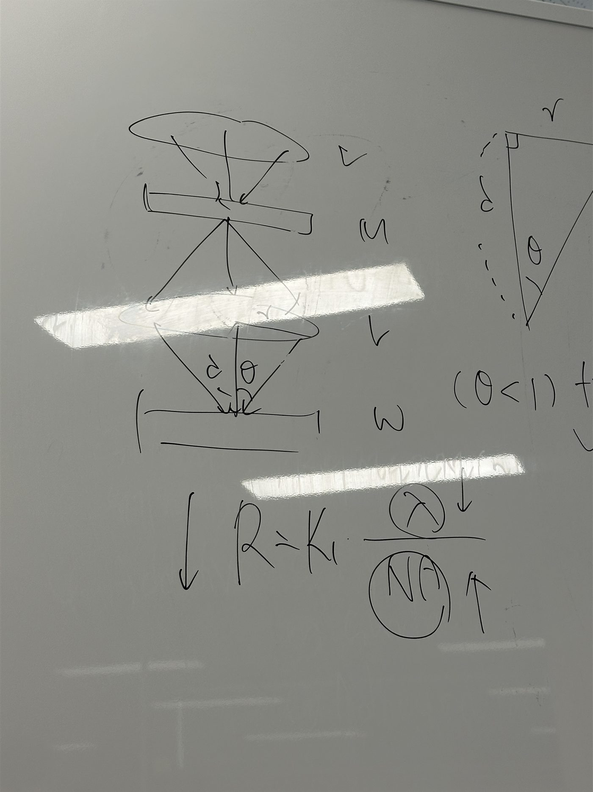
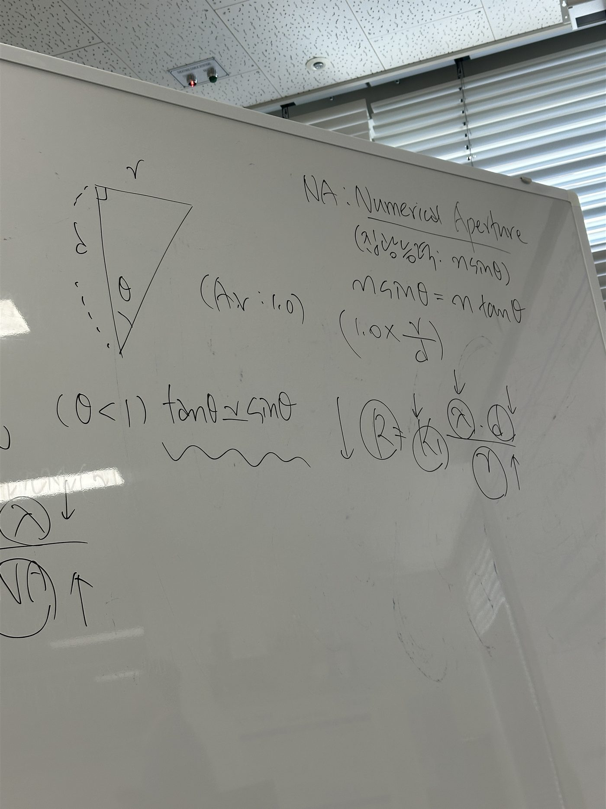
7. NA(Numerical Aperture)와 해상도
NA 에서 Numerical Aperture 를 시중에서는 개구수 라고 표현한다. 초점 심도를 조정할 때는 조리개의 개수?(크기?)를 컨트롤한다. 조리개가 작으면 빛이 적게 들어가고 초점은 잘 맞고, 조리개 크기가 크면 빛이 많이 들어가고 초점은 잘 맞지 않는다. (Trade-off 확실하게 이해하고 넘어가기)
→ 그래서 NA 를 물어보면 카메라 용어 자체로 개구수라고 이해하지 말고 빛이 들어왔을 때 Wafer에 Focus를 얼마나 잘 맞출 수 있어? 집광능력 (nsinθ) 라고 대답할 수 있어야 한다.
우측에 나와있는 식은 유도 된 값이다. 따라서 한 번 따라가보면서 생각하면 될 것 같다.
- projection 거리인 d가 작아질수록, 렌즈의 크기가 커질수록, 파장이 작아질수록, k1 값이 작아질수록 해상도가 좋아진다.
- 렌즈 크기가 현미경처럼 크지는 않다. 그렇게 크면 좋겠지만 어렵다. 그만큼 커지는 것이 중요하다.
NA = n sinθ이고, θ가 작을 때는 sinθ ≈ tanθ = r/d이므로 NA ≈ n·r/d로 볼 수 있다. 그래서 렌즈가 크고 가까울수록(r↑, d↓) NA가 커진다.
k1을 바꾼다는 것은 (1) OAI, (2) OPC, (3) PSM을 조절한다는 것이고 L과 M 각각에 대해서 저렇게 바꾼다고 한다.
L: Light - Off-Axis Illumination으로 빛이 들어가는 방식을 바꾸는 조명 기술
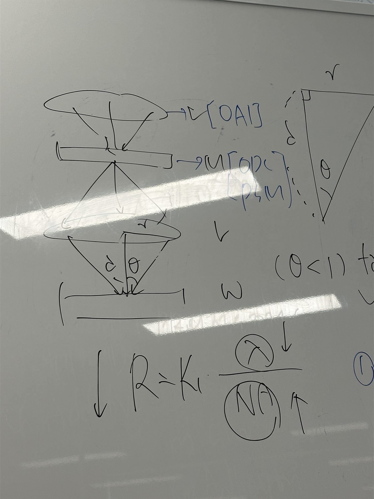
8. 회로 선폭의 의미하는 것은?
1. Gate to Gate
2. Metal to Metal
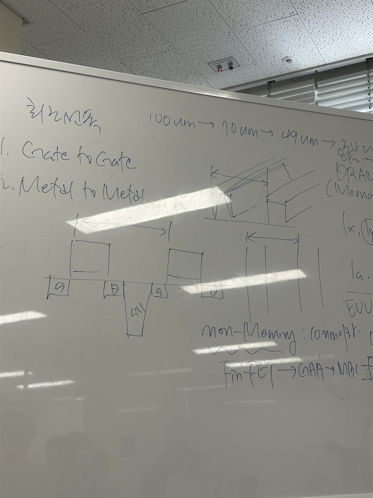
9. Memory 반도체와 비Memory 반도체
<Memory 반도체>
구조: 8F² → 6F² → 4F² (여기서는 입체구조)
Ref) 어제 했던 100 → 70 → 49 → 34nm 이 얘기가 선폭에 대한 얘기였음
DRAM에서 1x, 1y, 1z → 1a, 1b, 1c라고 얘기하는 이유는 더 이상 스케일 다운이 안되기 때문이다.
대상: “구조: 8F² → 6F² → 4F² (여기서는 입”
메모리 반도체를 지원하면 여기 얘기를 해야지, 비메모리 반도체 FinFET 인데 엉뚱하게 설명하면 안된다.
1x, 1y, 1z : 10nm 중,후반
1a, 1b, 1c: 10nm 초,중반
어쨌거나 x,y,z와 a,b,c는 세대 체인지
EUV 광원을 사용해서 10nm 를 만든다고 했을 때 EUV 30대가 필요하다. 하나당 2500억이면 7조 5천억. 그래서 공식적으로 메모리 반도체에는 EUV를 사용 하지않지만, 1y 에서는 6개의 step에서는 EUV 장비를 사용한다.
현재 1a, 1b까지 왔고, 1c는 차세대이다.
<비Memory 반도체>
여기는 10nm 이하 → 7nm → 5nm → 3nm → 1nm
구조: FinFET→GAA (MBC-FET은 삼성에서 GAA 구조를 부르는 이름이다. 별개의 세대가 아님)
<삼성전자 뉴스룸>
Planar type
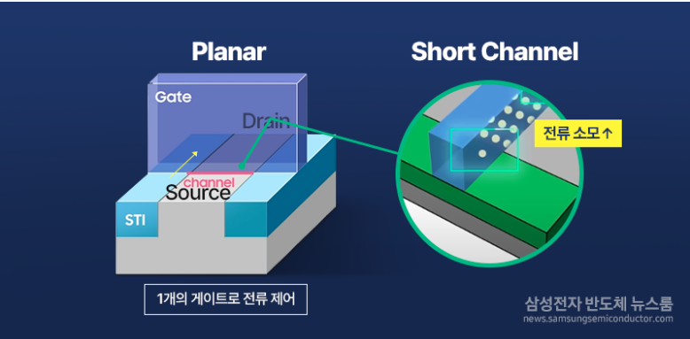
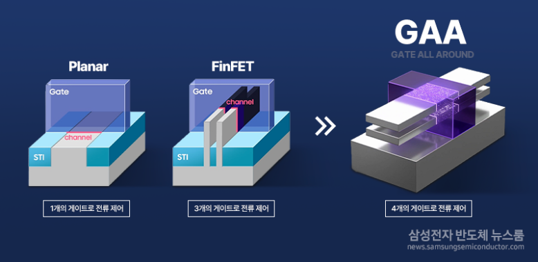
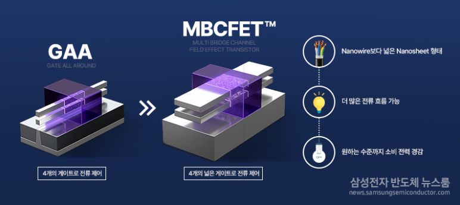
- 삼성에서 말하는 MBCFET은 Multi Bridge Channel Field Effect Transistor)로 삼성전자 반도체의 GAA 구조이다.
- 초기의 GAA 구조보다 Channel을 더 넓게 만들었다. 따라서 통로가 넓어짐에 따라 저항이 줄어들고, 전류가 더 많이 흐르게 되어 누설 전류를 더욱 효과적으로 제어할 수 있다.
- 그래서 기존의 트랜지스터보다 전력 소모를 줄이고 성능은 향상시킬 수 있다.
10. 슬라이드별 메모 (5 · 8 · 9 · 10 Slide)
5Slide
- 이건 과거의 방식이고, 지금은 칩 하나로, 그러니까 사각형 틀 하나를 스캔하는 방식이다.
- Mask 제조업체 반도체산업협회에서 검색해보기 (알짜배기 회사) CAD 툴 같은 것을 사용한다고 함
8Slide
- 이건 8인치 장비이다. 12인치 장비는 공개가 안되어 있다.
- Main ARM Track 위치에서 기계가 움직이면서 공정을 진행한다.
- Main ARM Track에서 움직이는 것과 Exposure을 하는 장비는 구분된다. ASML은 노광장비만 파는 것이다.
- EUV는 1년에 Max로 60까지밖에 생산이 안되고 있다. TSMC, Intel, 삼성은 Foundary 업체니까 치열하게 경쟁하고 있고, 하이닉스는 메모리이다보니 이제 막 사고 그랬던 것.
9Slide
- 타워처럼 생긴 곳이 열처리 하는 곳이다.
- 그리고 웨이퍼를 하나씩 옮기면서 진행하겠지.
10Slide
- 해당 각각의 공정이
- Soft bake는 90~110도, Hard Bake 120도 온도 차이
11. Soft Bake & Hard Bake
NUV 기준으로 설명 (Solvent + resin + PAC)
Soft Bake & Hard Bake
PR coating 을 진행하고 나서 PR coating의 점도를 조절했던 Solvent는 Soft Bake 공정을 통해서 제거
현상을 진행하고 나서 H₂O가 촉촉하게 생기니까 Hard Bake를 통해서 제거
130도 넘지 않는 이유는 PAC 분해 온도가 130도가 넘으면 안되기 때문이다.
PAC이 분해되면 Dissolution inhibitor가 안된다. → PAC(DNQ)은 노광 전에는 용해 억제제 역할을 하는데, 130도 이상이면 빛 없이도 열분해되어(N₂ 이탈) 노광 안 된 부분까지 용해 억제 기능을 잃는다. 그러면 노광/비노광 영역의 용해 속도 차이가 사라져 패턴이 제대로 남지 않는다. (현상 후 Hard Bake에서는 PR에 남은 H₂O와 반응해 카르복실산이 될 수 있다)
12. PEB
PEB는 Standing Wave를 해결하기 위해 진행하는 공정이다
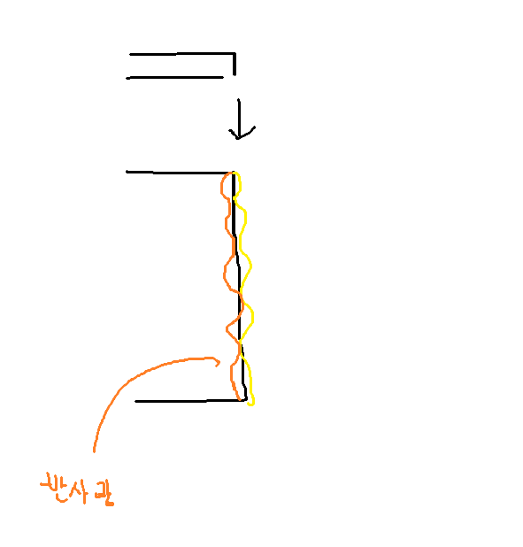
서로 다른 면에서는 반사광이 생기게 된다. 입사각이 90도 입사하는데 반사각이 예각으로 퍼져나가는 그림으로 표현될 수가 없다.
빛은 파동인데 직진으로 표현한다고 해서 직진성을 갖는게 아니다. 빛은 파동의 성질을 갖고 있다는 점을 반영해서 그림을 그리면 다음과 같다.
노란색은 빛이 파동의 형태로 입사하기 때문에 반사광이 주황색 처럼 된다.
불량현상: Standing Wave
원인: Reflection Ray
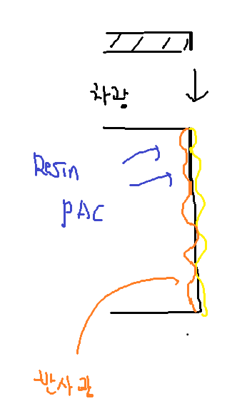
원래 존재하고 있던 부분은 Resin, PAC가 존재한다. 그런데 기본 원리는 빛을 받으면 dissolution 되는 물질로 바뀐다. 그래서 해결하기 위해서 PEB를 진행하자. 그리고 BARC를 통해서 이 현상을 막자.
현상: PEB
원인: BARC (Bottom Anti-Reflective Coating)
현실에서는 뜨거운 상태로 다음 공정을 진행하기 전에 Track 장비 내에서 Hot Plate를 진행하고 나서는 Cool Plate위에 올려둬야 한다.
13. HMDS 처리
- Hydrophilic: 친수성 → Dielectric(SiO₂/Si₃N₄)
- Hydrophobic: 소수성 → Si, Poly-Si, PR
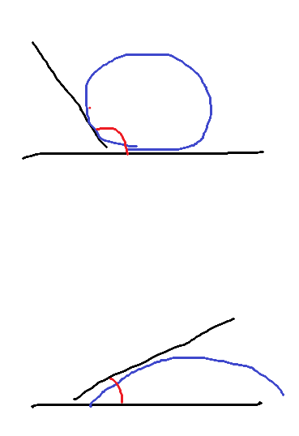
- 접촉각 90도 이하면 친수성, 접촉각 90도 이상이면 소수성
- 실제로 친수성과 소수성을 따질 때는 H와 OH기가 동시에 존재하고, OH기가 더 많이 존재하면 친수성이라고 하는 것이다.
- 그래서 결국 Surface Treatment를 통해서 친수성-친수성 or 소수성-소수성으로 바꿔줘야 한다. 근데 Si랑 PR은 소수성이니까 소수성쪽으로 극성을 갖게 만들어줘야지
- 친수성, 소수성을 논할 때는 Adhesion을 논하고 있는 것이다. 극성을 맞춰준다는 것은 “Adhesion이 좋게 만들어준다” 라는 말이다.
- Adhesion이 제대로 안되어 있으면 들떠있고, 현상을 진행할 때도 웨이퍼를 돌리면 분사하기 때문에 PR이 떨어져 나갈 수 있다. (과거 공정에 대해서 얘기하고 있다.)
- Dry Etch에서 PR이 너덜거리면 Mask 역할을 못하고, Ion Implantation을 제대로 진행하지 못해서 Impurity 주입도 어렵다
- SiO₂가 Si 기판에서 살짝 떠있게 되면 전자가 흘러간다. 이게 우리가 인식할 수 없지만 몇 nm라도 떠있으면 문제가 생긴다 (이런게 진짜 배워가야하는 시점임. 나는 감이 없으니까)
- 기본적으로 전류는 + → - / 전자는 그 반대 : 결국 전자의 흐름으로 전류의 흐름을 얘기한다. 그리고 전자의 움직임으로 전류의 움직임을 얘기한다.
14. Carrier Mobility
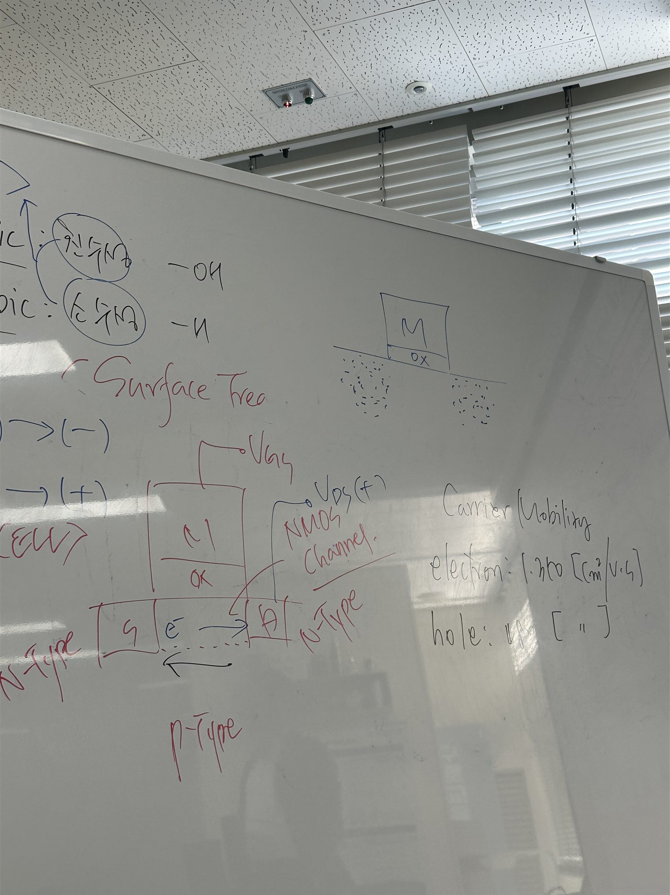
- MOSFET에서 NMOS Channel은 N-channel이 형성되어서 NMOS channel 인 것이다. Source drain이 N type으로 도핑된 트렌지스터를 사용한다. 일반적으로 교육할 때는. 그리고 S → D로 이동하는 것은 전자이고, 이게 다수 캐리어이다. 이때 전류는 D → S로 흐른다.
- DRAM Cell 영역에서는 스위칭 속도가 빨라야하기 때문에 전자를 다수캐리어로 사용하고, 정공을 다수캐리어로 사용하는 PMOS는 사용하지 않는다. (확실히 이해가 된다. Cell 영역이 몰랐으면 몰랐겠지)
- 그러면 왜 Cell 영역에서는 PMOS를 사용하지 않는 이유는? Carrier Mobility가 정공은 느려서.
- 실제로 Carrier Mobility를 비교하면 Electron은 1350 cm²/V·s 이고 Hole은 480 cm²/V·s (이 정도는 외워라!)
15. 슬라이드별 메모 (11 · 12 · 13 Slide)
11Slide
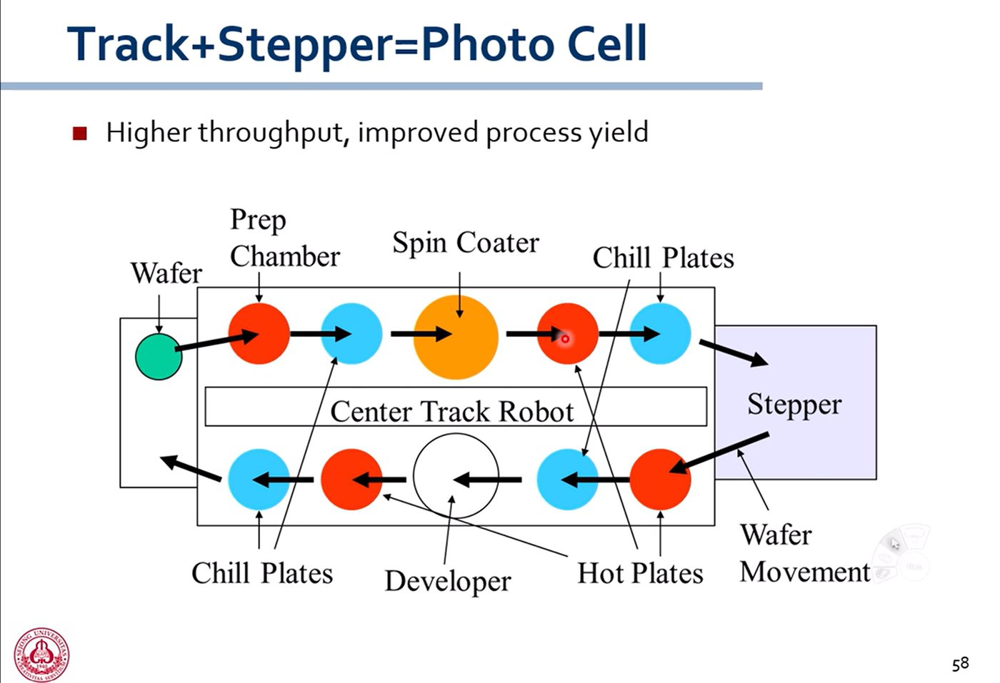
- EFEM이 내려오면 FOUP 앞쪽으로 탁 세팅되면 열려서 웨이퍼가 들어가는 구조이다.
- 아까도 말했듯이 장비를 뜯어보면 Hot plate module, cool plate module이 다 들어가 있다.
- 보통 Track 장비 만드는 곳을 일본 그리고 노광기 만드는 곳은 ASML 이런식으로 분업해서 진행한다.
12Slide
- 위 사진을 보면 Prep Chamber가 HMDS 처리를 하는 곳이다.
- HDMS는 90도의 온도에서 Vapor 형태로 나오게 된다. R.T는 27도 정도 되기 때문에 Wafer는 증기로 인해 50도 이상의 뜨거운 상태이기 때문에 Cool plate에 올려둬야 한다. (OMG 이제 머릿속에서 그려진다)
- 그래서 식힌 다음에 PR coating을 진행해준다.
13Slide
- 황산이 반도체 공정에서 사용할 때 Four nine이면 99.99% 이면 순도가 매우 높다.
- 황산이 하는 역할은 수분 제거이다. (염산은 단백질 제거한다)
- Si-OH기가 잔뜩 있는데 H가 붙으면 H₂O가 촉촉하게 생기고 친수성 상태이기 때문에 황산을 사용해서 촉촉한 물을 제거해준다.
- 황산은 폐액으로 뒀다가 화장품 회사에 판다고 한다. 그리고 알아서 공정에서 잘쓰겠지
ex. 공업산 황산은 60%이다. 피부 조직에 있는 수분이 제거되어서 마치 불에 탄 것처럼 된다 . 염산은 단백질을 제거한다. 그래서 뼈가 드러난다.
대상: “Si-OH기가 잔뜩 있는데 H가 붙으면 H₂O가 촉촉하게 생기고 친수성 상태이기 때문에 황산을 사용해서 …”
이것 그 이후 HDMS 처리와 더불어서 조금 더 생각해서 정리하기
16. 15Slide
- Wafer 바로 위에 PR을 도포하는 경우는 없다! Wafer가 아무 이유없이 드러난채로 공정을 진행하지 않는다.
- Si 표면은 공유결합으로 이루어져있고, 맨 위는 공유결합 끊겨 있어서 Dangling-Bond 가 생겨있다. (공유결합은 8개 옥텟 규칙이 가장 안정하니까)
- 그래서 맨 위에 Si는 불안정하니까 뭐든 와서 붙으려고 하니까 particle도 붙을 수 있고 그렇다. 따라서 세정공정은 진행할 수 있지만 원칙적으로 이런 불안정한 Si Wafer 표면을 보호하는 Passivation layer 가 필요하고 그게 SiO₂ 인 것이다.
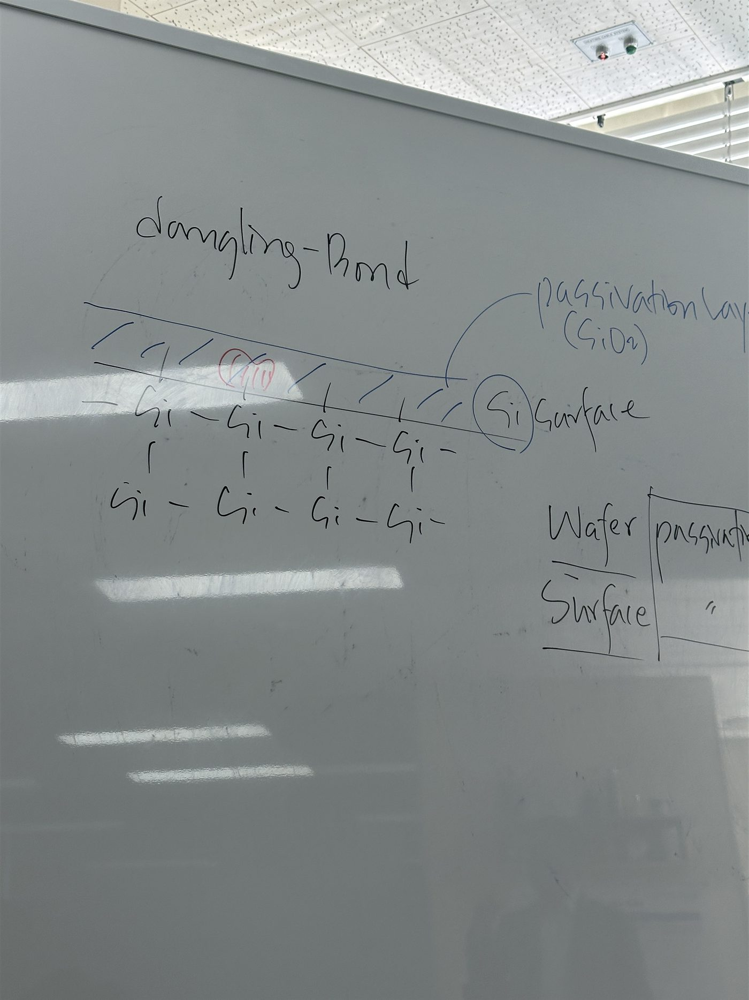
Passivation (보호하는 주체에 따라서 보호하는 소재도 달라진다)
- Wafer Passivation: Wafer 전체 보호 - Si₃N₄
- Surface : Si 표면 보호 - SiO₂
17. 16 Slide
- PR Coating이 1000~6000rpm 정도라고 한다.
ex) 차로 비유하면 60km로 갈 때 1800~2000rpm 이다. 100km 으로 달리면 2500~3000rpm 그러면 6000rpm 정도면 시속 200km (대충 감잡기)
- 그래서 이게 밑에서 진공으로 제대로 잡지 않으면 Si wafer 믹서기가 되는 것이다.
문제 상황: A 레시피에서 1000Å (목표 PR두께) 인데 2000rpm으로 돌린 상황이라고 해보자. 그리고 온도, 압력, 분사량을 일정하게 했다.
Q. 근데 800Å 만 되었다면? 왜 잘못 되었을까?
A.
(1) 대기중의 습도가 높다. PR이 건조한 상태보다 잘 흐르는 상태가 되었을 것이다.
(2) 분사 노즐을 보니까 4개의 노즐 중에서 2개가 막혔다. 그러면 PR 분사가 덜 되었을테니 PR 두께가 감소했을 것이다.
레시피를 맹신하면 안된다. 전부 다 동일하게 해도 결과가 달라지기 때문이다.
→ 공정 기술 엔지니어는 Input Output 퍼포먼스가 균일하게 나올 수 있게 하는 역할이다.
더 구체적인 설명
A 레시피에서 1000 ± 10Å 을 타겟 했다고 하자.
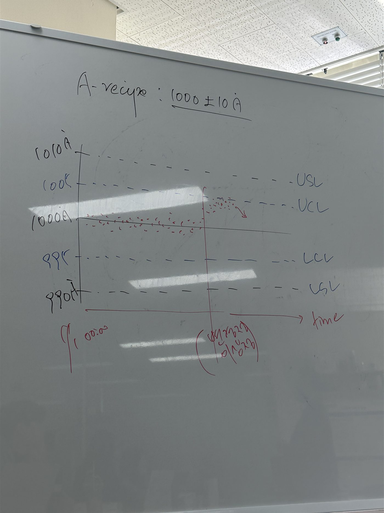
- 실제 USL과 LSL에 가깝게 한다면 저기에 딱 맞게 하면 위험하니까 UCL, LCL이라는 기준 선을 둔다.
- 추세가 변하기 시작하는 때(트렌드가) 혹은 범위를 벗어나기 시작할 때 문제 발생 지점으로 가서 변경점, 이상점을 파악해서 공정기술엔지니어가 트렌드를 다시 원상복기 시키는 일이다.
- 그래서 문제를 보고 노즐이 하나가 부서져서 안나오고 있었네? 이걸 고쳐서 Output performance를 다시 spec in 시키는 것이 설비 공정엔지니어의 일이다.
Q. USL, LSL, UCL, LCL이 각각 무엇인가요? (통계에서 나오는 내용인가요?)
A. 통계에서 나오는 내용으로, SPC(Statistical Process Control, 통계적 공정관리)라고 합니다.
1. 네 가지 선의 의미
| 약어 | 이름 | 누가 정하나 | 의미 |
|---|---|---|---|
| USL / LSL | Upper / Lower Specification Limit (규격 상한/하한) | 설계·고객 요구 | 이 범위를 벗어나면 불량 |
| UCL / LCL | Upper / Lower Control Limit (관리 상한/하한) | 공정 데이터의 통계 | 이 범위를 벗어나면 공정에 이상이 생겼다는 신호 |
| CL | Center Line | 공정 평균 | 보통 목표값 근처 |
- USL/LSL은 "요구사항"입니다. 칠판의 1000±10Å이면 USL=1010Å, LSL=990Å입니다.
- UCL/LCL은 "공정이 실제로 보여 주는 산포"입니다. 보통 평균에서 ±3σ(표준편차)로 잡고, 데이터에서 계산합니다. 정규분포라면 ±3σ 안에 99.73%가 들어옵니다.
2. 공정능력지수 Cp, Cpk
공정의 산포가 규격(USL/LSL)에 비해 얼마나 여유 있는지를 숫자로 나타낸 값입니다. 식의 6σ는 −3σ~+3σ 범위의 폭입니다(식스시그마 수준과는 다른 말).
- Cp = (USL − LSL) / 6σ : 산포만 봅니다. 규격 폭이 공정 산포의 폭(6σ)의 몇 배인지를 나타냅니다.
- Cpk = min(USL − μ, μ − LSL) / 3σ : 평균(μ)이 한쪽으로 치우친 것까지 반영합니다. 평균에서 가까운 쪽 규격까지의 거리를 3σ로 나눕니다.
- 예) 평균 1000Å, σ = 2Å이면 Cp = 20 / 12 ≈ 1.67이고 평균이 중심이라 Cpk도 1.67입니다. 평균이 1005Å로 치우치면 Cp는 그대로이지만 Cpk = (1010 − 1005) / 6 ≈ 0.83으로 떨어집니다.
- Cpk가 Cp보다 작으면 평균이 중심에서 치우쳤다는 뜻입니다. 통상 Cpk ≥ 1.33을 합격선으로 보고, 반도체에서는 더 높게 요구하는 곳도 많습니다(회사마다 다름).
기존의 잘못된 관점
- 여러가지 공정변수 최적의 레시피 엔지니어가 되겠습니다! (X)
→ 그냥 공정 레시피를 건드린다는 것은 50년간 삼성이 쌓아온 공정 조건이고, 데이터인데 이걸 고친다고 말하고 있는 것이다.
- 그래서 공정의 Output performance 가 문제가 생겼을 때 다시 Spec in 할 수 있게 만드것이 진짜 공정/설비 기술엔지니어가 하는 일이다. (다시 말하면 Output performance가 균일할 수 있도록 만드는 것이다.)
전공정, 앞공정의 변경점 이상점을 파악해서 유지보수한다 → 공정기술
설비 쪽에서 이슈를 찾고 고친다 → 설비기술
그래서 맨날 가서 할 일은 트렌드를 보고 문제를 파악하는 것이다.
- Photo 공정에는 못해도 70개의 레시피, 수많은 제품(최소 40개), 설비 …. → 이걸 다 곱하면 수많은 경우의 수가 발생하기 때문에 빅데이터가 쌓이는 것이지 빅데이터가 먼저인게 아니라니까?
- 그래서 이렇게 데이터가 쏟아져 나오기 때문에 빅데이터 시스템을 알아야하고, 그래서 빅데이터를 알아야하는 것이라는 거지. 이러한 배경에서 빅데이터가 필요한 것이지, 공정보다 먼저 빅데이터일 수는 없다. ADsP를 왜 어필하냐는거지
- SET Value 와 Real Value 에 차이가 나면 알람이 울린다. 그게 rpm 이던, 온도 이던 왜 rpm이 왜 온도가 떨어졌는지 이유를 찾고 고치는 maintanance를 진행하는게 설비엔지니어의 일이다.
- 레시피는 고정 값이 아니다!
자소서의 방향성을 다시 되짚어보기. 내가 엉뚱한 소리를 하고 있는게 아닌지.
그리고 노트를 만들 때 남들 다 할 수 있는 정도로 말할 거면 의미가 없다. 그리고 전공쪽으로 깊이 파봐라
진짜 제대로 보려면 원서를 확인해봐라. 이미 잘못된 것들이 너무 많다.
18. Presentation (13:20-15:50)
- 5분 발표, 페널티 4:30~5:30 안에 들어와야함. 못들어오면 발표 한 사람이 더하기
- 원고 X, 판서 X
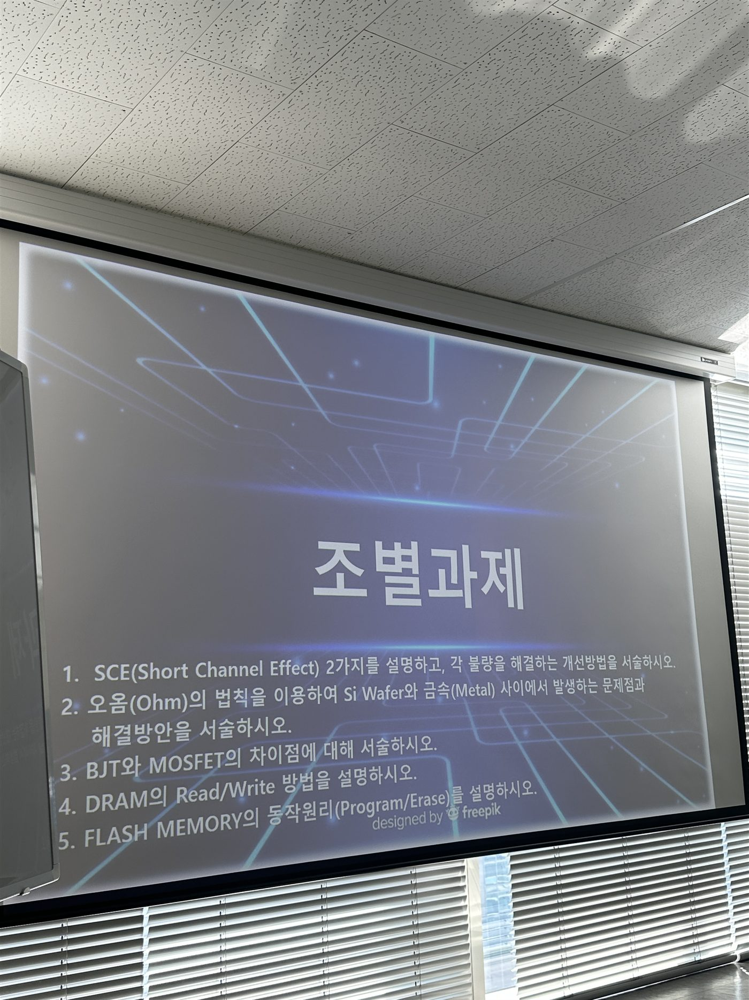
- 방향성 정하기
- 각자 조사해서 합치고 presentation 어떻게 할지 합치기
주제: FLASH MEMORY의 동작원리(Program/Erase)를 설명하시오.
1. 개요
- 반도체를 수행하는 기능에 따라 메모리 반도체와 비메모리 반도체로 나눌 수 있습니다.
- 그 중에서도 메모리 반도체에는 휘발성 메모리와 비휘발성 메모리가 있습니다.
- 휘발성 메모리에는 전원이 꺼지면 데이터가 사라지는 DRAM과 비휘발성 메모리에는 전원이 꺼져도 데이터가 유지되는 FLASH 메모리가 있습니다.
- FLASH 메모리는 다시 NAND와 NOR로 나뉘는데, 이 중 현재 가장 널리 사용되는 NAND FLASH를 중심으로 설명드리겠습니다.
- NAND Flash는 NOR Flash와 셀이 연결되는 방식에서 가장 큰 차이가 있습니다. NAND는 셀이 직렬도 연결되어 있고, 그에 따라 같은 면적에도 더 많은 셀을 넣어 집적도가 높고 가격이 저렴합니다.
- Bit line, Word line
- Gate에 인가하는 것은 Word line을 통해서 인가한다.
2. 구조
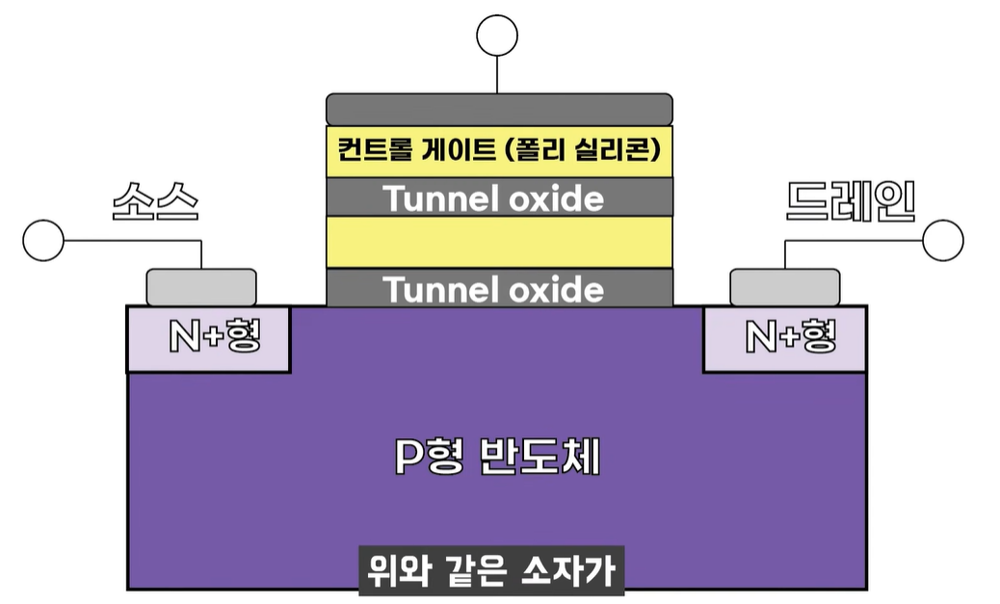
- 가장 아래 기판은 P-type 실리콘 반도체입니다. Source Drain은 각각 N type으로 도핑되어 있습니다.
- Si wafer 층 위에는 Tunnel oxide가 있고, 그 위에 floating gate가 존재합니다. 그 위에 다시 Tunnel oxide가 존재하고, Control gate가 존재합니다. 그리고 나서 다시 Tunnel oxide가 존재합니다.
근데!! 위의 그림이 조금 부정확한 것 같음!
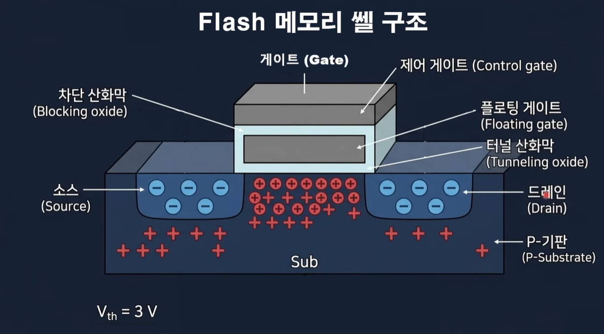
- 다시 구조를 정리해보자면
기판 / Tunneling Oxide / Floating gate / Blocking Oxide / Control Gate
3. 동작원리
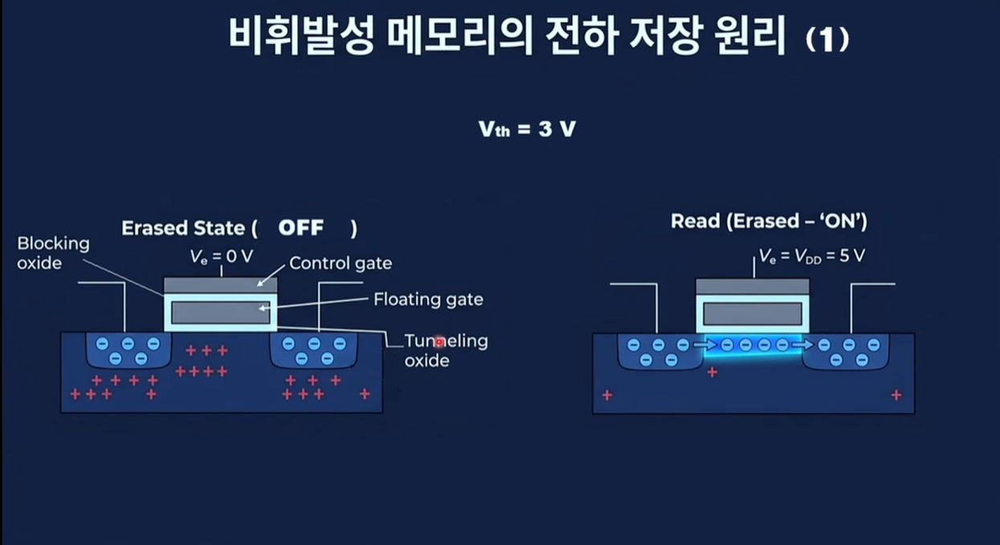
[1] Erase 된 상태
- Program이 되지 않은 상태를 Erase 된 상태라고 합니ㄱ다. (기본 상태) Erase 상태에서는 Floating Gate에 전자가 존재하지 않습니다.
- 문턱 전압이 3V 인 경우를 따져봅시다.
(1) Gate에 0V를 가해줬으니 Channel이 형성되지 않습니다.
(2) Gate에 5V 가해주게 되면 문턱전압을 넘어 Channel이 형성되게 됩니다.
- 이렇게 Channel이 형성되면 Cell 자체는 ON 상태가 됩니다.

[2] Program 된 상태
(1) Gate에 12V를 가해주게 되면 Channel에 있는 전자들이 양의 전압이 강하게 걸린 Control gate 쪽으로 가려고 합니다. 이때 Tunneling oxide가 막고 있다. 하지만 12V 정도 되는 강한 전압이 걸리게 되면 Channel에 전자들이 Floating Gate로 들어오게 됩니다. (양자 터널링 효과)
이때 Floating Gate는 어디에도 연결되지 않은 상태이기 때문에 부유한채로 갇혀서 존재하게됩니다.
→ 이걸 바로 Program 된 상태라고 합니다.
(2) Gate에서 5V가 다시 가해지게 된 상태라고 합시다. 이때는 이전과 다르게 Floating gate에 전자들이 존재하고 있습니다. 따라서 Erase된 상태와 다르게 Program 된 상태에서는 채널이 끊기게 됩니다. (아마도 척력) 따라서 channel 이 끊겼기 때문에 OFF 상태가 됩니다.
이때 이렇게 Floating gate에 전자가 갇히게 되고, 전원을 끄게 되더라도 여전히 Floating gate에 존재하기 때문에 Cell의 특성이 그대로 유지되게 된다. 그래서 “비”휘발성 메모리이다.

[3] Erase 하고 싶다면
Gate에 - 12V를 가해주게 되면 Floating Gate에 존재하는 전자들이 빠져나가고 기존의 MOSFET의 형태가 됩니다.
그래서 이후에 다음에 다시 5V를 걸어주면 정상적인 MOSFET 동작을 하게 된다.
19. 대본 (Flash 메모리의 Erase, program에 대해서 설명드리겠습니다.)
1. 개요
- 반도체를 수행하는 기능에 따라 메모리 반도체와 비메모리 반도체로 나눌 수 있습니다.
- 그 중에서도 메모리 반도체에는 휘발성 메모리와 비휘발성 메모리가 있습니다.
- 휘발성 메모리에는 대표적으로 전원이 꺼지면 데이터가 사라지는 DRAM이 있고, 비휘발성 메모리에는 전원이 꺼져도 데이터가 유지되는 FLASH 메모리가 있습니다.
- 이 FLASH 메모리는 다시 NAND와 NOR로 나뉘는데, NOR과 NAND중 program과 erase 속도가 빠르며 직렬로 연결되어 수직 적층이 가능하여 높은 집적도의 구조를 형성하기 용이한 NAND FLASH가 주로 사용되며, 이에 따라 NAND FLASH를 위주로 설명드리겠습니다. 는 PROGRAM & ERASE 속도 차이가 있어 주로 NAND가 사용됩니다.(NAND read 느리고 program&erase 빠름)현재 가장 널리 사용되는 NAND FLASH를 중심으로 설명드리겠습니다.
- 이때 NAND Flash는 직렬연결이 되어있어 Program과 Erase 속도가 빠릅니다. 그리고 집적화가 가능합니다.
2. 구조
- Word line과 Bit line을 통해, program과 erase를 진행하게 되는데요.
- 컨트롤 게이트 Word line과 연결되고, Bit line을 통해 Cell 간 직렬 연결이 됩니다.
- 지금부터 구조에 대해서 설명 드리겠습니다. P-type 기판을 기준으로 n-channel을 형성하는 NAND Flash 구조를 통해서 설명드리겠습니다. P-type위에는 Tunneling oxide 그리고 플로팅 게이트 그리고 Control gate가 존재합니다.
3. 동작원리
(1) Erase 상태
먼저 Erase 된 상태에 대해 설명드리겠습니다. Erase 된 상태에서는 Floating gate에 전자가 존재하지 않습니다. 문턱 전압이 3V인 경우를 생각해봅시다. Gate에 0V가 가해진다면, Channel이 형성되지 않습니다. 이 때 Gate에 5V 가해주게 되면 문턱 전압을 넘어 n-Channel을 형성하게 됩니다.
(2) Program 상태
이제 Program 된 상태에 대해서 살펴보겠습니다. Gate 12V를 가해주는 상황을 생각해봅시다. 강하게 전압이 걸리게 때문에 Channel에 있는 전자들이 Control gate 쪽으로 가려고 합니다. 이 때 Tunneling oxide가 막고 있는데요, 강한 전압에 의해 Channeling 현상이 일어나게 됩니다. Chanelling 현상은 영자역학적으로 전위 장벽이 충분히 얇거나 벽이 충분히 얇은 경우 전자가 벽을 뚫고 넘어가는 양자 터널링 현상이 발생할 수 있습니다. 따라서 전자는 절연체를 통과해 Floating gate로 전자가 들어가게 됩니다. 이 때 Floating Gate에 전자가 갇힌 상태를 Program 된 상태라고 합니다.
Gate에 5V가 다시 가해지게 된 상태라고 합시다. 이 때는 이전과 다르게 Floating Gate에 전자들이 존재하고 있습니다. 따라서 Erase된 상태와 달리 동일한 5V가 가해지는 상황임에도 Program 된 상태에서는 Floating gate 안에 전자가 존재하며 이로 인해 척력이 발생해 전자들을 밀어내게 됩니다. 따라서 채널이 끊기게 됩니다. 따라서 Cell 자체는 off 상태가 됩니다.
(3) Program 상태에서 Erase 상태로 만드는 상황을 설명하겠습니다.
Floating gate에 전자가 갇힌 상태에서 Erase하여 전자를 제거하고 싶다면 -12V (강한 전압차)를 Control gate 가하여 Floating Gate에 존재하는 전자들이 빠져나가게 됩니다. 다시 Erase된 상태가 됩니다. 그러고 나서 다시 5V 가해준다면 정상적인 채널을 형성하게 됩니다.
*터널링 현상
하전입자는 고전적으로 전위 장벽이 존재 시 반대쪽으로 이동이 불가능하나, 양자역학적으로 전위 장벽이 충분히 낮거나 얇을 경우 반대로 넘어갈 수도 있다.
일정한 높이의 전위 장벽이 있을 때, 한쪽의 전위를 높여주면 일정한 높이에서 경사가 발생하고, 따라서 비스듬해진 전위 장벽으로 인해 장벽 너비가 짧아져 터널링 발생 확률이 올라가게 된다.
위와 같은 원리로 소재와 구조적 특성을 조절하여 셀을 적절히 구성한 뒤, 인가 전압을 적당히 조절하며 터널링을 양방향으로 발생시킬 수 있으며, 전압을 조절해서 가둔 전자가 이동하지 않도록 전위 장벽 사이에 가둘 수 있다.
20. 발표 피드백
- 5분동안 면접관을 내 편으로 만들기 위해서는 먼저 어떤 항목을 설명할지 목차를 설명하고 들어가야 한다. 이제부터 A, B, C에 대해서 설명드리겠습니다. → 10초도 안걸리지만 목차를 말하는게 중요하다.
- 반도체 용어와 발음, 그리고 의미를 잘 알고 잘 말할 수 있어야 한다.
- 면접관님들에게 약어를 먼저 말하는게 아니라 풀로 단어를 먼저 한 번 말하고 나중에 약어로 설명하는게 좋다.
- 5분동안 암기한 것을 얘기하는게 아니라, Keyword를 잡고 언제 말할지, 그리고 이걸 설명하면서 다음 keyword를 무엇을 말할지 머릿속으로 생각해서 말하는 것이다. 대본이 아니라 Keyword로 연상해서 말해라
- 면접관님들이 가장 많이 보는 것은 눈 맞춤이다. 시선처리. 만약에 너무 부담스러우면 면접관님들의 정수리 끝쪽을 본다고 생각해라. 그리고 면접관 님들의 시선을 30:30:30 으로 분배해서 봐라
- 이러이러해서 생기는 문제입니다. → 왜? 이유를 알고 발표할 때도 설명할 수 있어야 한다. 반드시 인과관계를 설명할 수 있어야한다. (강사님 수업 때 하셨던 것처럼 반드시 바뀌었다면 그 이유가 있고, 그 이유를 설명할 수 있어야 한다.)
- 각기 서로 다른 전공을 갖고 있기 때문에 서로 다른 관점에서 접근할 수 있다.
- 내가 알고 있는 지식을 많이 설명하려고 하기보다는 문제에서 주어진 핵심적인 내용을 토대로 어필하는 것이 중요하다.
- “그래서, 그리고, …. “ 이러면서 생각이 안날 때 계속 이어가면 지겹게 느낄 수 있다. 그래서 짧은 단문으로 설명하려고 하는게 좋다. 한 문장의 길이는 35~50 글자로. 단문장으로
- 어깨 넓이로 서서 가만히 손 모으고 발표해라. 서 있는 자세에 시작.
- PT 발표 할 때는 칠판에 시선 30, 면접관님들 70
- 판서 발표하면 편리하게 하라고 하는게 아니라 틀리면 지나가는 것임.
- 수식이 있으면 비례, 반비례로 설명한다.
- 판서를 할 때는 명칭을 약어로 써서 설명한다. 대문자 명칭만 써두고, 여기 저기로 말하는게 아니라 풀네임을 언급해서 설명하면 된다.
- 면접관님들 앞에서 설명하듯이 교사처럼 설명하면 안된다.
- “그렇다고 합니다” 이렇게 다른 사람의 얘기를 전달하듯이 하면 안된다.
- 추임새 “음, 저, 이제..” Q. 진짜 생각이 안날 때는 어떤 멘트로 떼우는게 좋은지 손 액션은 가볍게는 해도 좋은지?
- 진짜 생각이 안날 때: 면접관님들에게 제가 말씀드리고자 하는 것이 기억이 안나서 잠시 한숨 돌리고 다시 말씀드려도 괜찮겠습니까?
- 손액션: 그냥 되도록이면 하지 않는게 좋다.
- 발표한지 2분이 지나면 호흡이 바뀐다. 혼자서 2분 이상 혼자 떠들어본적이 없기 때문이다.
- 호흡 관리도 필요하다. 서로 돌아가면서 5분씩 혼자서 발표해보는 연습이 필요하다.
- 스터디 주제에서 5개 중에 하나 빼고 4개를 돌아가면서 해보자! 피드백 해주신 것 적용해보면서 해보자! 각 전공은 어떻게 설명할 수 있어?
- 다음 주 목요일, 그 다음 주 목요일 수업 하실 예정이다.
- 그리고 만약에 정말 생각이 안난다면, “제가 생각이 갑자기 안나서 한숨 돌리고 다시 말씀 드려도 되겠습니까?” 라고 정중히 여쭤보고 다시 말하기. 거기에서 “어… 그…” 이러고 있으면 안된다.
대상: “면접관님들 앞에서 설명하듯이 교사처럼 설명하면 안된다.”
이거 내 단점이다. 내가 이렇게 하려고 했는데..